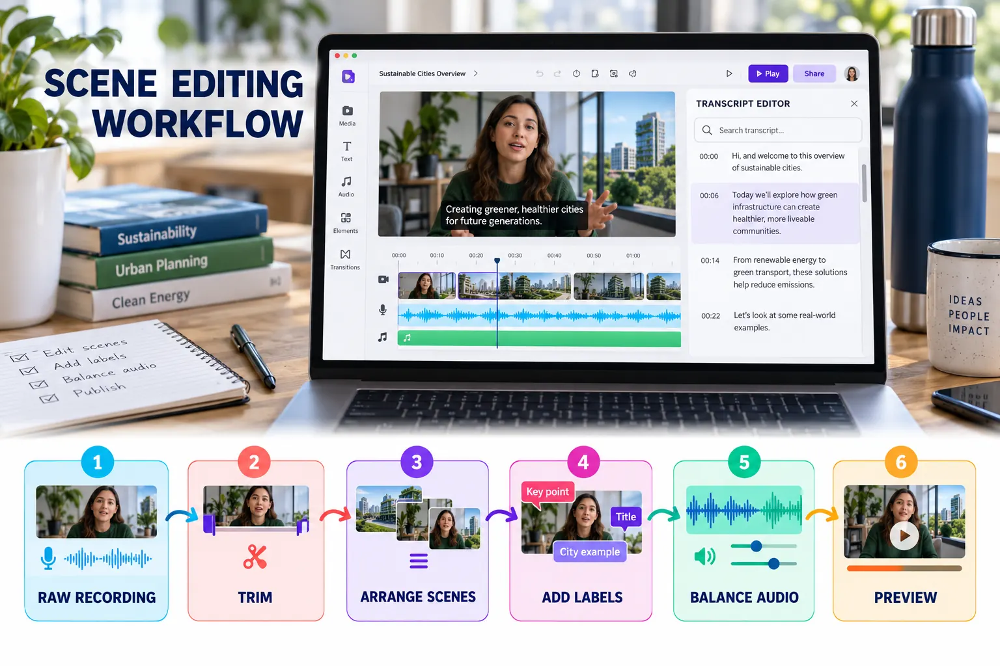

Editing Scenes, Media and Audio
Transform recorded material into a focused explanation using scenes, timing, transcripts and consistent visual decisions.

Six-stage editing workflow
Trim the recording
Remove setup time, mistakes, repeated actions, filler words and long silences.
Arrange scenes
Match the approved storyboard and maintain a logical visual sequence.
Add essential labels
Use short headings, callouts or highlights to direct attention to evidence.
Control object timing
Ensure that text and visual objects appear only when they support the narration.
Balance audio
Keep narration clear and reduce music whenever speech is present.
Preview the full video
Watch continuously rather than judging only individual scenes.
Transcript-based editing
For supported speech recordings, use the transcript to locate spoken sections, filler words and long pauses. Removing transcript content can shorten the associated media without repeatedly searching the timeline.
- Verify the transcript before deleting speech.
- Restore a removed word if the edit changes the meaning.
- Listen across every cut for unnatural jumps.
- Confirm that captions remain accurate after editing.
Professional editing rules
Typography
Use no more than two font families and maintain a clear hierarchy.
Transitions
Use simple transitions consistently; avoid decorative effects without purpose.
Music
Use it sparingly and never allow it to compete with narration.
Reading time
Keep important text on screen long enough to understand it.